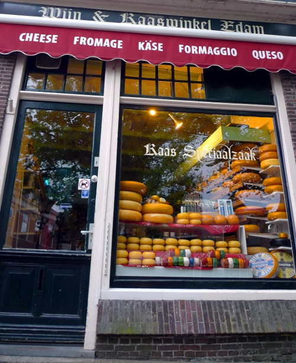
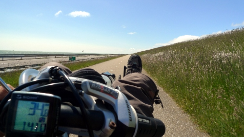
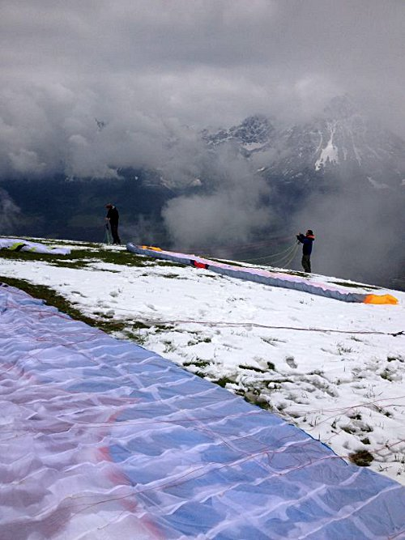
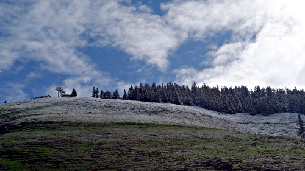
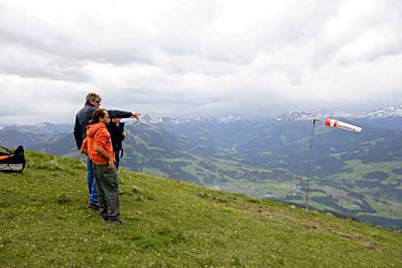
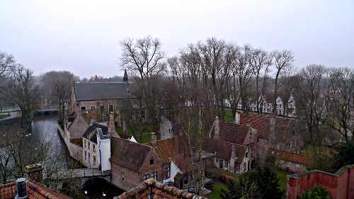
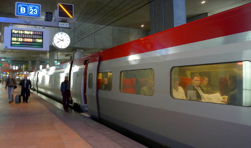
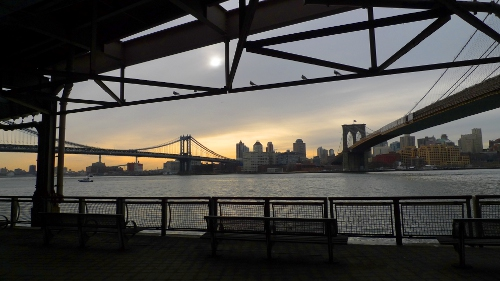

First view after opening the curtains to a beautiful summer day. This guy is assisting in keeping the weeds in my front garden under control…
RobvanEde.nl Blog
Traveler, there is no path, paths are made by walking – Antonio Machado
Jun 09
Tourist in my own country

The ride home was a nice and short 110 kilometer one today. Easy compared to the last two days. Al-in-all, I can say that I experienced the part of the Netherlands around the Zuiderzee in a totally new perspective these last three days. Landscapes, towns and people were amazing, something that can be experienced so close to home, yet we sometimes think we need to fly to another continent for. A good thing to realize every now and then.
Jun 08
Barrelling down the “Afsluitdijk”

The bit after the dyke I was still ahead of the wind, making it easy to reach a total distance for the day of 165 kilometers.
By the way: this part of the Netherlands truly is beautiful, especially in full sunshine as today.
Jun 07
Cycling through the polders
The first day of three days of riding the bicycle around the “Zuiderzee” today. Flevoland was doing it’s best in impressing me with beautiful views around most corners. The only downside today: that wind… Coming from straight ahead made the going quite difficult at times.
A small campsite in “De Lemmer” was very welcome, especially after the last 26 kilometers North from Urk. 136 kilometers in total today.
Jun 05
Beautiful instruction from an 18th century saint
Do not do what you want, and then you may do what you like – Sadasiva
May 25
Final flights of the week

May 24
Winter in May
Last night, we had 20 centimeters of snow on the mountains, an incredible amount for this time of the year. The snowing continued today, so flying was no option.
A walk up the Hohe Salve, cable car down to Soll and another walk back to Brixen made for a nice day. We were guided by a dog that walked with us and knew exactly where the paths were (we were unable to tell, since everything was covered in deep snow). The landscape from 1000 meters altitude and up looked like real winter-wonderland…
May 22
Flying through the cold

May 20
Maiden flight completed
After a long wait on top of the Choralpe, conditions finally improved to startable, with a rain-free window of about 1.5 hours, just enough for the maiden flight of the new wing. Not counting the worst landing so far, the flight was short but good. The Eden5 felt nice and responsive, and certainly has a much better glide-ratio than what I was used to so far. Hoping for good conditions later in the week…
May 20
Second day in Brixental

We were ready for take-off twice. Unfortunately the weathergods decided to start the rain/snow/hail. Waiting on top of the mountain now…
May 19
Exploring the Brixental

May 13
Bicycle chain art
The bicycle parts that got me so far do not deserve to be thrown away and be forgotten. Now, my garden shed has this Taijitu symbol on the wall, made of many old chains and parts of a cassette.
Some background from Wikipedia:
In Chinese philosophy, the concept of yin-yang (simplified Chinese: 阴阳; traditional Chinese: 陰陽; pinyin: yīnyáng), which is often called “yin and yang”, is used to describe how seemingly opposite or contrary forces are interconnected and interdependent in the natural world; and, how they give rise to each other as they interrelate to one another. Many natural dualities (such as male and female, light and dark, high and low, hot and cold, water and fire, life and death, and so on) are thought of as physical manifestations of the yin-yang concept. The concept lies at the origins of many branches of classical Chinese science and philosophy, as well as being a primary guideline of traditional Chinese medicine, and a central principle of different forms of Chinese martial arts and exercise, such as baguazhang, taijiquan (t’ai chi), and qigong (Chi Kung) and of I Ching.
Yin and yang are actually complementary, not opposing, forces, interacting to form a whole greater than either separate part; in effect, a dynamic system. Everything has both yin and yang aspects, (for instance shadow cannot exist without light). Either of the two major aspects may manifest more strongly in a particular object, depending on the criterion of the observation. The concept of yin and yang is often symbolized by various forms of the Taijitu symbol, for which it is probably best known in Western cultures.
Feb 27
Bruges from the brewery tower

Feb 26
On the way to Oostende

Feb 22
New York in a day

Feb 11
Real pizza in a real oven
Never seen an oven this hot, maybe we put a little too much wood on the fire… Pizza’s were excellent and ready in a few minutes.